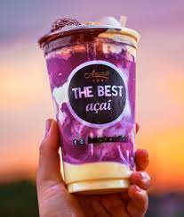

Sobre o The Best Açai
Localizada no coração da cidade o The Best traz para o mercado o que há de melhor em sorvetes e açai com várias opções, entre elas temos opções veganas. a trajetória do The Best começou em 2017, nós já somos destaque na cidade e conquistamos novos clientes a cada dia.
Nossa missão é: "nosso objetivo é expandir para outras cidades e trazer felicidade e sabor a nossos clientes".
Oferecemos funcionários dispostos e antenados às vontades,preferências e gostos dos nossos clientes. O atendimento possui padrão de excelência e agilidade, garantindo qualidade e satisfação dos nossos clientes.
Nosso estabelecimento
Nosso estabelecimento está localizado no coração da cidade.
Benefícios
- Atendimento aos Clientes
- Espaço diferenciado
- Local confortável
- Atendentes dispostos
- Diversidade de sabores
- Limpeza